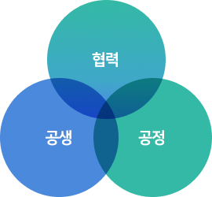
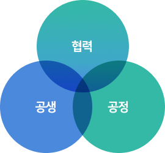

SUSTAINABILITY
Social
Management Coexistence
Management Sharing
Management Quality
Management Human Rights
Management Happiness of
Members
Dongbu Corporation’s Key Values of Coexistence Management
For mutual growth through coexistence cooperation, Dongbu Corporation sets coexistence, cooperation, and fairness as key values and is seeking to promote coexistence cooperation with partners and the establishment of a fair-trade culture.
 

- Values to promote coexistence with partners
-
- Supporting management consulting
- Supporting mutual collaborative education
- Cash payment 100%
- Values to promote growth with partners
-
- Benefit sharing system
- Excellent partner selection system
- Creation of collaboration brand
- Values to promote fair-trade culture
-
- Use standard subcontract form
- Utilize introduction of 4 big practices
- Conduct employee education relevant to fair-trade
Checklist to prevent violation of subcontract laws
In order to promote and establish fair and transparent subcontract transactions through stricter observance of subcontract laws and to prevent violations of law, Dongbu Corporation established our own unique checklist to prevent violations of subcontract laws, and it is operated in all subcontracts.
Example for operation of checklist to prevent violation of subcontract laws

Introduction of 4 Big Practices for Fair-Trade
-
- 01
- Practice for fair selection
(registration) of partner - View the full text
-
- 02
- Practice of desirable contract
conclusion for coexistence
cooperation among
large and small companies - View the full text
-
- 03
- Practice to utilize an installation
of internal subcontract
transaction committee - View the full text
-
- 04
-
Practice related to desirable
issue and storage of documents
in subcontract transactions
View all text - View the full text
- Fair-Trade
-
Fair-Trade Education
- 2022 : Education about fair technology trades and technology protection of small businesses
(KOCCA, 157 persons completed)- 2021 : First external education about observance of Fair Transactions in Subcontracting Acts
(Law Firm Yulchon, taken by 251 persons) : Second external education about observance of Fair transactions in Subcontracting Acts
(FT Consulting, taken by 227 persons)
- Coexistence Cooperation
-
Mutual Growth Program
In order to promote mutual growth thorough coexistence cooperation with partners, Dongbu Corporation is proceeding with various activities through mutual growth programs related to education, finance, management, and ESG. We will continue to make strenuous efforts to operate broad and various programs to establish sustainable supply chains.
Division Financial supports Education supports Management consulting supports ESG management supports Beneficiary partners 195companies 187companies 16companies 16companies -
Education
Support of Mutual Cooperation Education Support of Mutual Cooperation Education
Support of Mutual Cooperation EducationIn order to provide opportunities of education about construction practices and laws related to construction to employees of about 200 companies 2-3 times a year, Dongbu Cooperation is supporting mutual cooperation education hosted by CAK.
-
Finance
Foundation of Coexistence Cooperation FundFoundation of Coexistence Cooperation FundIn order to promote mutual growth with partners, Dongbu Cooperation provides a certain amount in coexistence cooperation funds to Foundation for Agriculture and Fishery Cooperation of Small and Large Companies each year to support partners.
-
Management
Management Consulting Support Management Consulting Support
Management Consulting SupportDongbu Corporation is providing customized consulting services to improve partners’ credit ratings by hiring credit rating agencies and promoting the growth of partners and strengthening competitiveness.
-
ESG
ESG Management Consulting ESG Management Consulting
ESG Management ConsultingDongbu Corporation is providing ESG education and customized consulting services to partners by hiring credit rating agencies and making efforts to allow partners of small companies to participate in ESG management.
-
External Agency Assessment Performance
Dongbu Corporation is continuously participating in mutual cooperation assessments which evaluate the degree of mutual cooperation between small and large construction companies for mutual growth and promotion of mutual cooperation between small and large companies, the mutual growth index assessment which is the index to evaluate the mutual growth level of a large company, and fair trade agreement implementation assessments which evaluate the degrees of implementation after fair trade agreement conclusions between large and small companies.
| Assessment Year | Mutual cooperation assessment | Mutual growth index assessment | Fair trade agreement implementation assessment |
|---|---|---|---|
| 2021 | ≥ 95 points | Excellent | Best |
| 2020 | ≥ 95 points | Excellent | Best |
| 2019 | ≥ 95 points | Excellent | Excellent |
※ Performance in 2022 will be presented in June-September in 2023
Rewarded Results from External Agencies
Dongbu Corporation continues to do all it can to create a culture of mutual cooperation with partners,
and to establish a culture of fair trade in the construction industries. We won the award from the Fair-Trade Commission Chairman for such efforts.
Grand prize in 2021 Fair Trade Agreement
Implementation Assessment

Grand prize in 2022 Fair Trade Agreement
Implementation Assessment